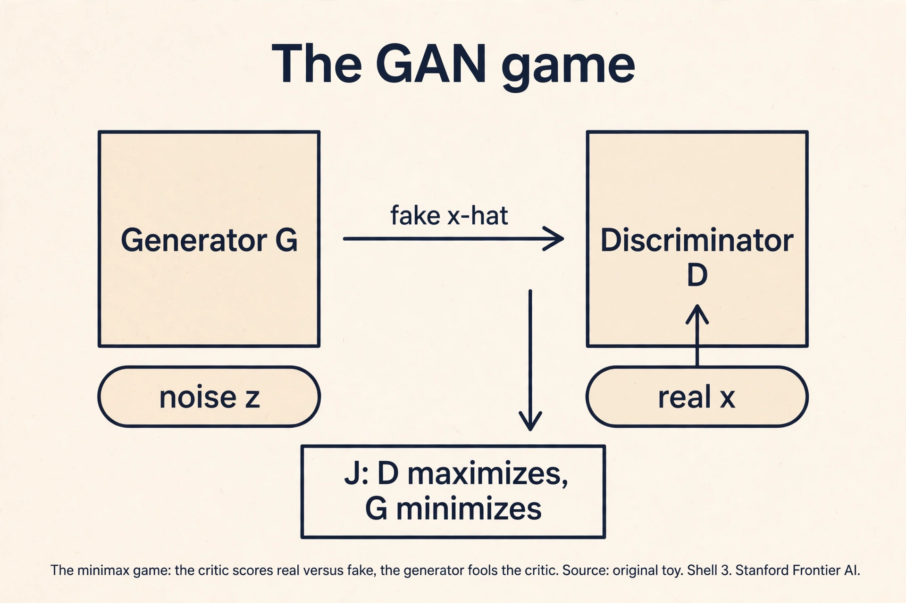
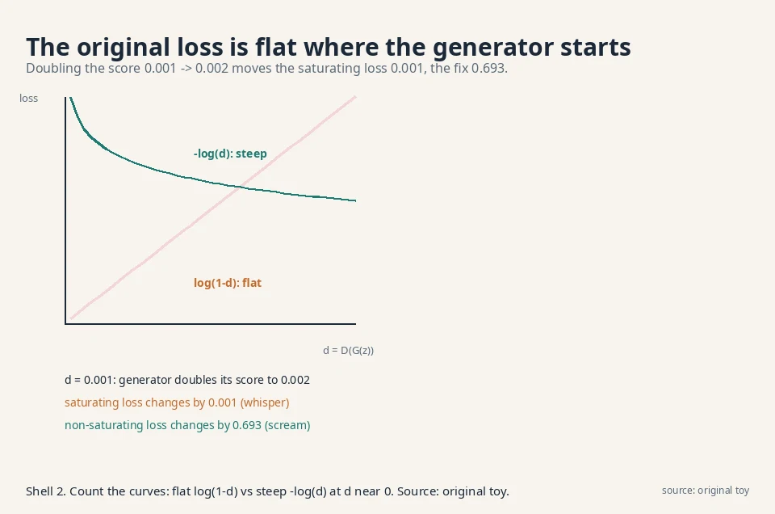
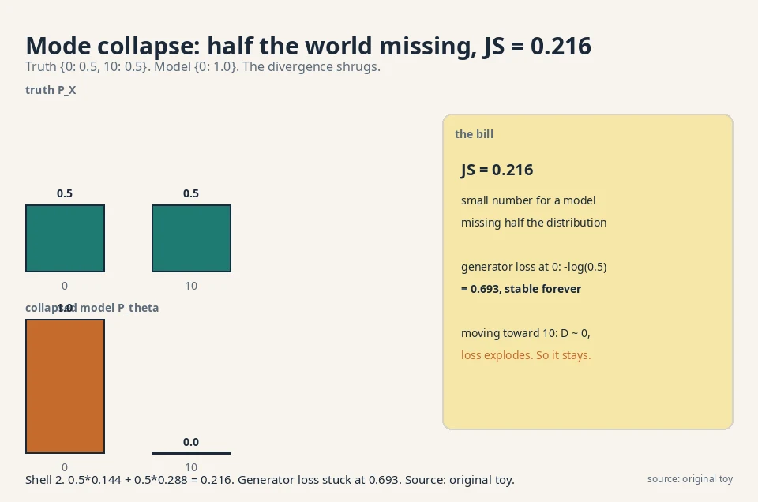
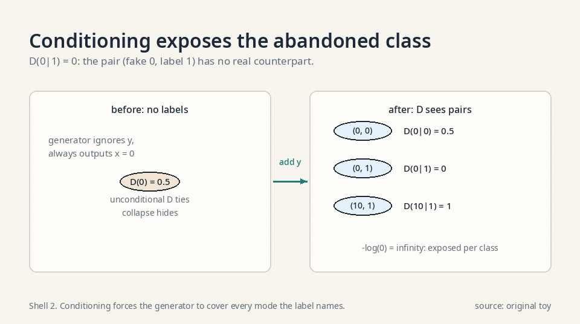
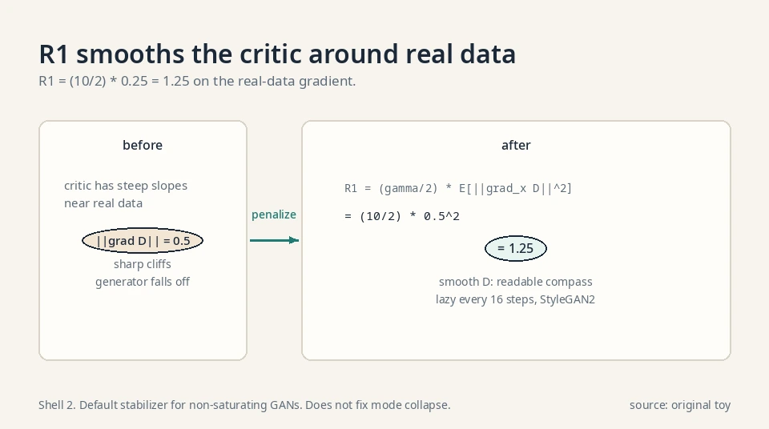
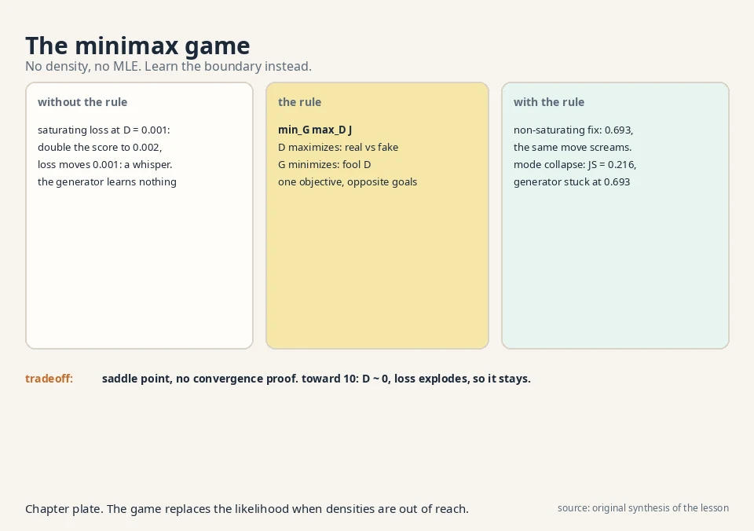

Lecture 4: Generative Adversarial Networks
Video blocked (ad-blocker or local file mode).
Watch on YouTubeVideo not loading? Watch on YouTube
The lecture video for this lesson: the minimax formulation on the board. Timestamps in the text link to the exact moment.
The task: play the game from Lesson 3
Lesson 3 derived the objective. Now two neural networks play it. The generator G_θ takes noise z and outputs a fake sample x̂ = G_θ(z). The discriminator (the critic) D_w takes a sample x and outputs D_w(x), its belief that x is real, a number between 0 and 1. One objective, opposite goals:
J = E[ log D(x) ] + E[ log(1 - D(x_hat)) ]
x real x_hat = G(z) fake
discriminator: maximize J (call real "real", fake "fake")
generator: minimize J (fool the discriminator)
All logs in this lesson are natural logs (base e).
The discriminator wants D = 1 on real data and D = 0 on fakes. The generator wants D = 1 on its fakes. This is a minimax game: min over θ, max over w. Training alternates: a few discriminator steps, then a generator step, repeat.
The optimal discriminator, derived
Fix the generator. What is the discriminator’s best possible move? Maximize J pointwise: for each x, choose D(x) in (0,1) to maximize p_X(x)·log D + p_θ(x)·log(1−D). Differentiate and set to zero:
p_X / D - p_theta / (1 - D) = 0 p_X * (1 - D) = p_theta * D D*(x) = p_X(x) / ( p_X(x) + p_theta(x) )
The optimal critic reports the posterior probability that x came from the data rather than the generator. Where the data dominates, D → 1. Where the generator dominates, D → 0. Where they tie, D* = 0.5.
The game reduces to 2·JS − log 4
Plug D back into J. The generator’s problem becomes minimizing C(G) = E_{p_X}[log D] + E_{p_θ}[log(1−D*)]. A short rearrangement:
C(G) = E_{p_X}[ log( 2*p_X / (p_X + p_theta) ) ]
+ E_{p_theta}[ log( 2*p_theta / (p_X + p_theta) ) ] - log 4
= 2 * JS(P_X || P_theta) - log 4
So the minimax game, with an optimal discriminator, minimizes the Jensen-Shannon divergence (up to the −log 4 shift). This is the fact Lesson 3 derived from the f-GAN side. The minimum is −log 4, reached when P_θ = P_X and D* = 0.5 everywhere. One precondition: the derivation divides by p_X + p_θ, which needs p_X(x) + p_θ(x) > 0 at every x the expectations visit.
First attempt: trace two rounds by hand
The setup: a one-point world
Make everything tiny. Real data is a single point: x = 0, always. The generator ignores noise and outputs a constant: G(z) = θ. The discriminator is D(x) = sigmoid(w·x + b), one weight and one bias. Sigmoid squashes any number into (0, 1).
Start: θ = 2, w = 0, b = 0.
D(0) = sigmoid(0) = 0.5 (real point: coin flip) D(2) = sigmoid(0) = 0.5 (fake point: coin flip) J = log 0.5 + log(1 - 0.5) = -0.693 + -0.693 = -1.386
Both players are blind. The game starts at maximum confusion.
The discriminator step: w 0 → −0.5
Maximize J. The gradient with respect to w: D(0) does not depend on w (x = 0 kills it), but D(2) does. ∂J/∂w = −2·D(2) = −1.0 at the start. Take a step of size 0.5: w = −0.5.
D(0) = sigmoid(0) = 0.5 (unchanged) D(2) = sigmoid(-1.0) = 0.269 (fake now looks fake) J = log 0.5 + log(1 - 0.269) = -0.693 + -0.313 = -1.006
J rose from −1.386 to −1.006. The discriminator learned: real stays 0.5, fake drops to 0.27. Note it could not raise D(0) with w alone. The bias b would handle that on the next step.
The generator step: θ 2 → 1.93
Minimize J over θ. ∂J/∂θ = −D(θ)·w. At θ = 2: D = 0.269, w = −0.5, so ∂J/∂θ = +0.1345. Descend with step 0.5: θ = 2 − 0.067 = 1.93.
The generator moved its output from 2 toward 0, toward the real data. The discriminator’s slope (w < 0: D falls as x grows) told it which way was “more real”.
What the trace teaches
Two rounds, real numbers, and the game works: the fake inches toward the data. The mechanism to remember: the generator never sees the data directly. It only feels the discriminator’s slope. The slope is a compass, and the compass only works if the discriminator is informative: not perfect, not useless. That balance is the whole training problem, and both failures below are the compass breaking.

flowchart LR
Z["z: noise"] --> G["G_theta: fake x_hat"]
G --> D["D_w: real or fake?"]
X["x: real data"] --> D
D --> J["J: D maximizes, G minimizes"]
Where it breaks, part 1: the saturating loss
The flat curve, counted
Now break it. Early in training the generator is terrible and the discriminator is confident: D(G(z)) ≈ 0.001 on fakes. The generator minimizes log(1 − D(G(z))). Watch the gradient it gets. If the discriminator’s score on the fake rises slightly, from 0.001 to 0.002 (the generator improved a little), how much does the loss change?
saturating: L = log(1 - d) d = 0.001 -> L = log(0.999) = -0.00100 d = 0.002 -> L = log(0.998) = -0.00200 change: 0.001. Almost nothing.
The curve log(1 − d) is flat near d = 0. The generator made real progress (doubled its score) and the loss barely noticed. The gradient vanishes exactly when the generator needs it most: at the start, when it is bad. This is the saturation of GAN training, the subject of W4L10.
The fix: the non-saturating loss
The standard fix changes the generator’s target. Instead of minimizing log(1 − D(G(z))), maximize log D(G(z)): push the fake’s “real” score up directly. Same fixed point (both want D = 1 on fakes), wildly different gradients:
non-saturating: L = -log(d) d = 0.001 -> L = 6.908 d = 0.002 -> L = 6.215 change: 0.693. Seven hundred times the signal.
Early in training the non-saturating loss screams while the original whispers. Every practical GAN uses this variant.
Same fixed point, different dynamics
The lecture’s lesson: the minimax game is not one game. The choice of which side’s loss the generator optimizes decides whether training moves at all. The fixed point is identical: at D = 1 on fakes, both losses agree the generator is done. But the path there differs completely. One path has gradients at the start. The other does not. The decision rule: always check the gradient magnitude at initialization, not just at the solution. A loss with the right fixed point and dead gradients is a broken loss.

Where it breaks, part 2: mode collapse
The collapsed equilibrium
The second failure is sneakier. The truth has two modes: P_X = {0: 0.5, 10: 0.5}. Half the data sits at 0, half at 10. The generator discovers that outputting 0 always fools the discriminator half the time: D(0) = 0.5 forever (real 0s and fake 0s are indistinguishable), and it never tries 10.
JS = 0.216, computed
Compute what the objective thinks of this. The model is P_θ = {0: 1.0, 10: 0.0}. The Jensen-Shannon divergence between truth and model:
M = average = {0: 0.75, 10: 0.25}
JS = 0.5 * KL(P_X || M) + 0.5 * KL(P_theta || M)
KL(P_X || M) = 0.5*log(0.5/0.75) + 0.5*log(0.5/0.25)
= 0.5*(-0.405) + 0.5*(0.693) = 0.144
KL(P_theta || M) = 1.0*log(1.0/0.75) = 0.288
JS = 0.5*0.144 + 0.5*0.288 = 0.216
JS = 0.216. A small number. The divergence barely punishes a model that deleted half the distribution. And the generator’s incentive is worse: at output 0 its loss is −log(0.5) = 0.693 under the non-saturating variant, stable forever. Any move toward 10 gets D ≈ 0 and a terrible loss. The generator sits at 0 and never explores. This is mode collapse: the model covers one mode and abandons the rest, and neither the loss nor the divergence complains loudly enough.
Why the discriminator cannot save it
Why does the discriminator not fix it? It can: D(10) = 1.0 (real 10s are always real). But the generator never samples near 10, so it never feels that gradient. The two-player dynamics have a stable bad equilibrium, and gradient descent walks straight into it. Lesson 2’s forward KL would have punished this (it is mode-covering: it visits the abandoned mode and charges for the zero), but the GAN’s JS-like divergence does not. The decision rule for diagnosis: if sample diversity collapses while the loss looks healthy, suspect the divergence, not the architecture.

The conditional variant: cGAN
Conditioning both players
The game so far is unconditional: generate any plausible x. The conditional GAN adds a label y (a class, a caption, a segmentation map) to both players. The generator takes (z, y) and must produce an x that fits y. The discriminator takes (x, y) and judges the pair.
J = E[ log D(x | y) ] + E[ log(1 - D(G(z | y) | y)) ]
Worked: conditioning exposes collapse
Revisit the mode-collapse toy with labels. Truth: y = 0 means x = 0, y = 1 means x = 10, each with probability 0.5. The generator ignores y and outputs 0 always.
The unconditional discriminator saw D(0) = 0.5 and was content. The conditional discriminator sees pairs. D(0|0): real (0,0) pairs and fake (0,0) pairs tie at 0.5. D(0|1): no real pair is ever (0,1), so D(0|1) = 0. When the generator is asked for y = 1, its output 0 scores 0: its non-saturating loss is −log(0) = infinity. The collapse is exposed per class. Conditioning forces the generator to cover every mode the label names. BigGAN’s class-conditional ImageNet generation is this mechanism at scale.

The scaffolding: DCGAN and the training tricks
DCGAN’s architecture rules
The original GAN paper used fully connected networks. DCGAN (Deep Convolutional GAN, Radford et al. 2016) replaced them with convolutions and a short rule list that became the default generator blueprint:
- Strided convolutions instead of pooling, in both networks. The network learns its own downsampling.
- Batch normalization in both networks (not on the generator’s output layer or the discriminator’s input).
- ReLU activations in the generator, LeakyReLU (slope 0.2) in the discriminator, tanh on the generator’s output.
- No fully connected hidden layers.
The rules are empirical, not derived. They stabilize the two-player dynamics enough that the game trains on 64×64 images. Every convolutional GAN since, including the StyleGAN line, descends from this blueprint.
One-sided label smoothing
Train D with target 0.9 on real data instead of 1.0. The mechanism: with target 1.0, D is rewarded for infinite confidence (logits to infinity), which saturates its sigmoid and kills the generator’s gradient. Target 0.9 caps the reward: D stops pushing once it is confident enough, leaving gradient for the generator. Only the real side is smoothed. Smoothing the fake side encourages D to reward fakes.
Minibatch discrimination
Give D a feature computed across the batch, e.g. the standard deviation of each feature over the batch. If the generator collapses and emits 64 identical faces, the batch std is ~0 and D flags the batch as fake. The mechanism attacks collapse directly: the generator must now fool a critic that sees diversity, not just single samples. StyleGAN’s minibatch-stddev layer is this trick, still in use.
R1 regularization, worked
R1 regularization (Mescheder et al.) penalizes the discriminator’s gradient on real data:
R1 = (gamma / 2) * E[ ||grad_x D(x)||^2 ], x real
Work it: γ = 10 (the StyleGAN2 value), and suppose ||∇_x D(x)|| = 0.5 on a real batch. R1 = 5 · 0.25 = 1.25. The mechanism: a discriminator with steep slopes near real data creates sharp cliffs the generator falls off. Penalizing the slope smooths D around the data manifold, which keeps the generator’s compass readable. It is applied lazily (every 16 steps in StyleGAN2) because the gradient-of-gradient is expensive. The decision rule: R1 is the default stabilizer for non-saturating GANs. It does not fix mode collapse. It fixes the critic’s manners.
PacGAN: pack the batch
PacGAN packs m samples together and shows the discriminator the pack. A collapsed generator emits m near-identical samples per pack. The packed discriminator spots the missing diversity directly: real packs vary, fake packs repeat. The mechanism is minibatch discrimination taken to the limit: the whole input is the batch. The price is m times the discriminator’s input size. It mitigates collapse without changing the divergence.

The honest price: the saddle point
Three concrete costs
The GAN’s bill comes due in the optimization itself. MLE (Lessons 2, 6-9) minimizes one function: go downhill. The GAN solves a saddle-point problem: the discriminator climbs while the generator descends, simultaneously. There is no single “loss going down” to watch. Training can oscillate, diverge, or collapse, and the usual signs of progress lie.
Three concrete costs. First, balance: a too-strong discriminator gives no gradient (saturation). A too-weak one gives wrong gradients. Every step must keep the two players matched. Second, no likelihood: the generator gives samples with no density, so you cannot score it with MLE or compare two GANs by a number from training. Lesson 5 builds the external judge (FID). Third, mode collapse as demonstrated: 0.216 JS for a model missing half the world.
The verdict
The lecture ends the adversarial block here with a verdict, confirmed in the evaluation transcript: the instability of saddle-point optimization is why state-of-the-art generation moved to latent-variable models, which need no adversary. Lessons 6 through 10 are that move.
| Failure | Demonstration | Number |
|---|---|---|
| Saturation | Doubling D(G(z)) from 0.001 | Saturating loss moves 0.001. Non-saturating moves 0.693 |
| Mode collapse | Truth {0: 0.5, 10: 0.5}, model {0: 1.0} | JS = 0.216. Generator loss stuck at 0.693 |
| No likelihood | Generator gives samples only | Cannot compute log P_θ(x). Need FID (Lesson 5) |
Where GANs run in real systems
Verified deployments, October 2026:
The non-saturating loss from this lesson is the standard generator objective in every practical GAN lineage, with verified architectures around it:
- DCGAN (Radford et al. 2016): the convolutional blueprint above. the paper.
- ProGAN (Karras et al. 2018): grows generator and discriminator progressively from 4×4 to 1024×1024. the paper.
- BigGAN (Brock et al. 2019): class-conditional, large batches, the cGAN mechanism at ImageNet scale. the paper.
- StyleGAN2 (Karras et al. 2020): non-saturating logistic loss with R1 regularization (γ on real-data gradients, applied lazily every 16 steps), Adam with β1 = 0, β2 = 0.99, mapping network z → w, weight demodulation. The sharpest faces of the GAN era. the paper.
- Spectral normalization (Miyato et al. 2018): divides each discriminator weight matrix by its largest singular value, capping the Lipschitz constant. A cleaner speed limit than WGAN’s clipping. the paper.
What changed across the years was not the game but the scaffolding: normalization, progressive resolution, and bigger batches to keep the two players balanced. When diffusion models arrived (Lessons 8-10), they won on training stability, not on sample quality alone: a plain minimization has no saddle point to fall off. [uncertain] Whether any current frontier system still trains pure GANs is not public.
Videos for this lesson
Lecture video: saturation of GAN training, the flat-gradient failure, on the board. If the embed is blocked: watch on YouTube.
External explainer: the GAN game, both losses, mode collapse, and the DCGAN architecture, with a PyTorch training loop. If the embed is blocked: watch on YouTube.

Two networks, one objective J = E[log D(x)] + E[log(1 − D(G(z)))]. The discriminator maximizes J: output near 1 on real data, near 0 on fakes. The generator minimizes J: make fakes score near 1. In the hand trace, the discriminator step moved w from 0 to −0.5 (J rose from −1.386 to −1.006) and the generator step moved θ from 2 to 1.93, toward the data. Because each player’s best move depends on the other’s current state. A fully trained discriminator against a fixed bad generator gives no useful gradient (saturation), and a generator trained against a fixed weak discriminator fools only that weakling. They must co-evolve.
After round one: θ = 1.93, w = −0.5, b = 0. Discriminator step: D(0) = 0.5 still (x = 0 kills w), D(1.93) = sigmoid(−0.965) = 0.276. The w gradient is −2·D(θ)·(1−D(θ))·θ ≈ −2·0.276·0.724·1.93 ≈ −0.77, so w moves to about −0.89 with step 0.5. Generator step: ∂J/∂θ = −D·(1−D)·w·… with the steeper w, θ moves further toward 0. Each round the compass gets sharper as the discriminator improves. When the discriminator gets too good too fast. If w plunges to −10, D(θ) hits ~0, the sigmoid saturates, and the generator’s gradient dies. That is saturation in miniature: the compass needle slams to the pin and stops pointing.
Early in training D(G(z)) ≈ 0, and the original generator loss log(1 − D) is flat there: doubling the score from 0.001 to 0.002 changes the loss by 0.001. The fix is the non-saturating loss −log D(G(z)): the same improvement changes the loss by 0.693, seven hundred times the signal. Same goal, usable gradients. The fixed point is the same (D = 1 on fakes), but the dynamics differ. The non-saturating variant is technically no longer the minimax game. It is a heuristic with the same equilibrium. In practice it is the only variant that trains.
The generator covers one mode and ignores the rest: truth {0: 0.5, 10: 0.5}, model {0: 1.0}. The JS divergence is only 0.216, so the objective barely objects, and the generator’s loss sits at a stable 0.693 with no incentive to explore 10. The discriminator knows 10 is real, but the generator never goes there to feel the gradient. Yes. Forward KL averages over the truth, visits the abandoned mode at 10, and charges infinity (the model assigns it probability zero). That is why the lecture calls forward KL mode-covering, and why VAE samples look blurry instead of collapsed: opposite failure, opposite cause.
Mode collapse with a healthy-looking loss is the classic signature. Check sample diversity directly: cluster a few thousand samples and count occupied clusters, or eyeball a grid. If one cluster dominates, the generator found the collapsed equilibrium. The loss cannot see it because JS = 0.216 barely punishes the missing mode. Fixes, in order: check the critic is not too strong (a perfect critic hides the collapse), add minibatch discrimination or diversity pressure, or switch divergence families (Lesson 5). Compare against the training data’s own diversity. Cluster the real data the same way. If the real data fills 40 clusters and your samples fill 3, the generator collapsed. If the real data fills 3, the model is faithful.
MLE minimizes one function, so the loss going down means progress. The GAN solves a saddle point: the discriminator climbs while the generator descends. The generator’s loss can fall because the generator improved or because the discriminator got worse. There is no single number to watch. Practitioners watch samples and external metrics (FID) instead of the training loss. The discriminator’s accuracy on a held-out split of real versus recent fake batches. If it sits near 100%, the critic is too strong and the generator gets no gradient. If it sits near 50%, the generator is winning or the critic is broken. Healthy training keeps it in between, moving slowly.
Generator: noise z through transposed convolutions to 64×64 (the DCGAN pattern). Discriminator: convolutions down to one score. Loss: non-saturating generator loss, never the original minimax form. Guards: (1) watch D’s fake-batch accuracy. If it pins near 100% on real and 0% on fakes, the critic is too strong: rebalance update ratios. (2) Sample a grid every epoch and count distinct-looking faces to catch mode collapse early. (3) Track FID against a held-out set (Lesson 5) since the training loss is uninformative. Mode collapse, early. The generator found one face that fools D and stopped exploring. Standard responses: strengthen diversity pressure, restart with a different seed, or accept that the JS-like divergence permits this equilibrium and move to a latent-variable model. Do not just train longer. The equilibrium is stable.
Recap: the whole lesson on one screen
- The game. D maximizes, G minimizes J = E[log D(x)] + E[log(1 − D(G(z)))].
- Hand trace. D step: w 0 → −0.5, J −1.386 → −1.006. G step: θ 2 → 1.93, toward the data.
- Saturation. At D(G(z)) = 0.001, doubling the score moves the original loss 0.001. Gradient dead on arrival.
- The fix. Non-saturating loss −log D: same doubling moves the loss 0.693. Seven hundred times the signal.
- Mode collapse. Model outputs only 0. Truth is half 0, half 10. JS = 0.216. The objective shrugs.
- Why it sticks. The generator’s loss at the collapsed point is a stable 0.693. Exploring 10 looks worse.
- The price. Saddle-point optimization: no single loss to watch, balance required every step, no likelihood to score models.
- The verdict. Instability is why the field moved to latent-variable models. Lessons 6-10.
Official sources and further reading
Official: - W2_L7: GANs formulation: paper - W4L10: Saturation of GAN training: paper
Further reading: - Goodfellow et al., “Generative Adversarial Nets” (2014): - the original minimax game. - Arjovsky, Chintala, Bottou, “Wasserstein GAN” (2017): - the answer to saturation (Lesson 5).
Caveats. The objective, the two-player structure, and the saturation topic are confirmed in the W2_L6 and evaluation transcripts. The hand trace, the 0.001/0.693 saturation numbers, and the 0.216 mode-collapse computation are the lesson’s own worked examples. [uncertain] The lecture’s exact numeric demonstrations are unknown.
Scope exclusions, documented. The playlist’s topic sequence lists two W3-W4 GAN topics the recovered transcripts do not treat, and they are excluded here rather than invented. GAN inversion (BiGAN, latent regression, bi-directional critics): the idea of learning an encoder alongside the generator to map data back to latent codes. The recovered lecture transcripts contain no substantive treatment, and the playlist’s T7 (Bi-GAN) is a code tutorial, not math. GANs as classifier-guided generative sampler (W3L8): the reading of the GAN game as a classifier steering generation. The recovered transcripts contain no substantive treatment of this view beyond label conditioning, which the cGAN section above covers. Both remain honest gaps: named, not filled.
Connections to the other courses
- CS336 (training data): that course asks what language models memorize versus generate. Mode collapse is the GAN analogue of memorization failure in reverse: instead of regurgitating training points, the generator regurgitates one mode. A worked tie: a collapsed generator producing the single most common training image scores D = 0.5 forever, exactly like a language model stuck repeating its most frequent phrase. Both are optimization equilibria, not bugs in the architecture.
- CS229 L11 (diffusion models): that course’s models never play this game. Their loss is a plain minimization (denoising error), which is why their training curves go down monotonically while GAN curves oscillate. Lesson 9 derives that loss.